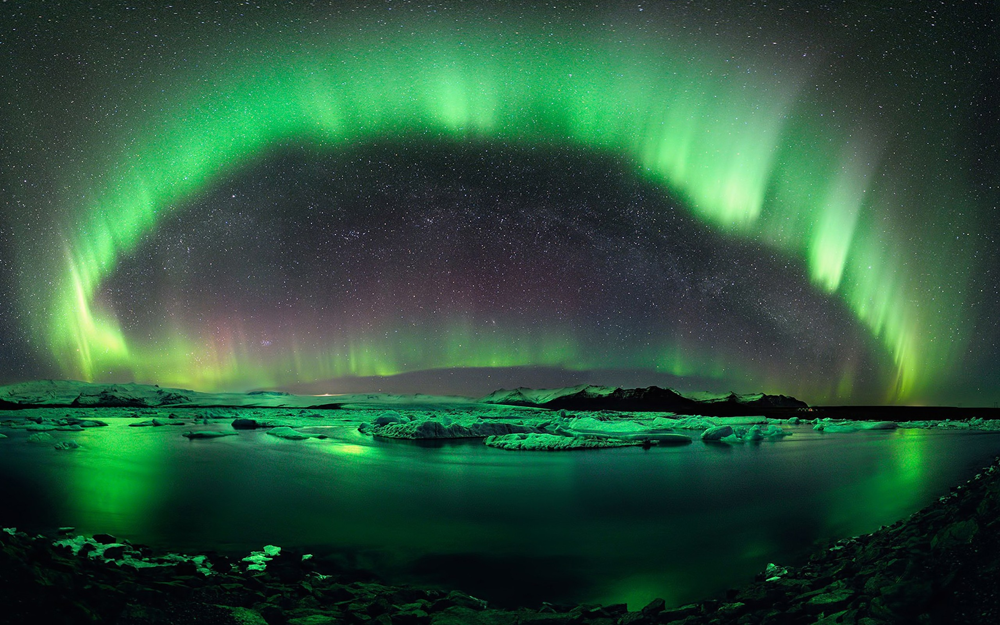

En Çok Okunanlar

Kutup Işıkları Nasıl Oluşur?
Musa Erol, Aralık, 2021

Mağara resimlerinden anladığımız kadarıyla en az 32.000 yıldır insanlığın dikkatini cezbeden kutup ışıkları, adını Roma mitolojisindeki şafak tanrıçası Aurora’dan alıyor. Kuzey Yarım Küre’deki kutup ışıklarını 1619 yılında tarif eden Galileo Galilei’nin onlara verdiği isim olan “aurora borealis” yani kuzey ışıkları ifadesini hâlen kullanıyoruz. Galileo bu ışık gösterisine atmosferimizden yansıyan güneş ışınlarının yol açtığını düşünmüştü. Güncel açıklamamız ise Galileo’nunkinden oldukça farklı.
Araştırmacılar, Atomlar ve Mini Lazerler Kullanarak “Atomik Televizyon” Geliştirdiler
Aysun Tolan, Ekim , 2022

Bilim insanları, geleneksel 480i çözünürlük standardını karşılayan bir video sinyali taşımak için lazerleri ve atom bulutlarını kullanan bir 'atomik televizyon' geliştirdiler.